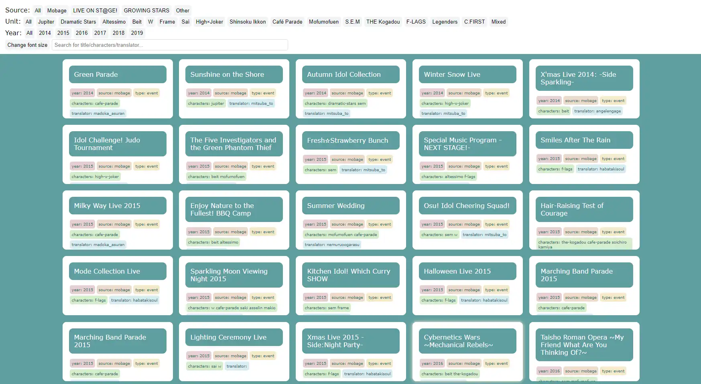
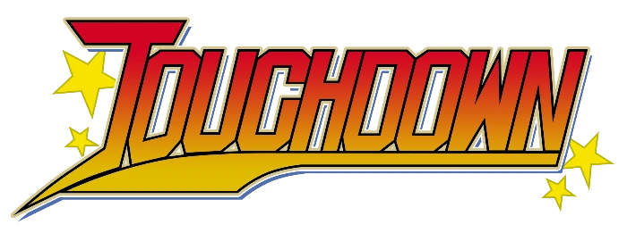
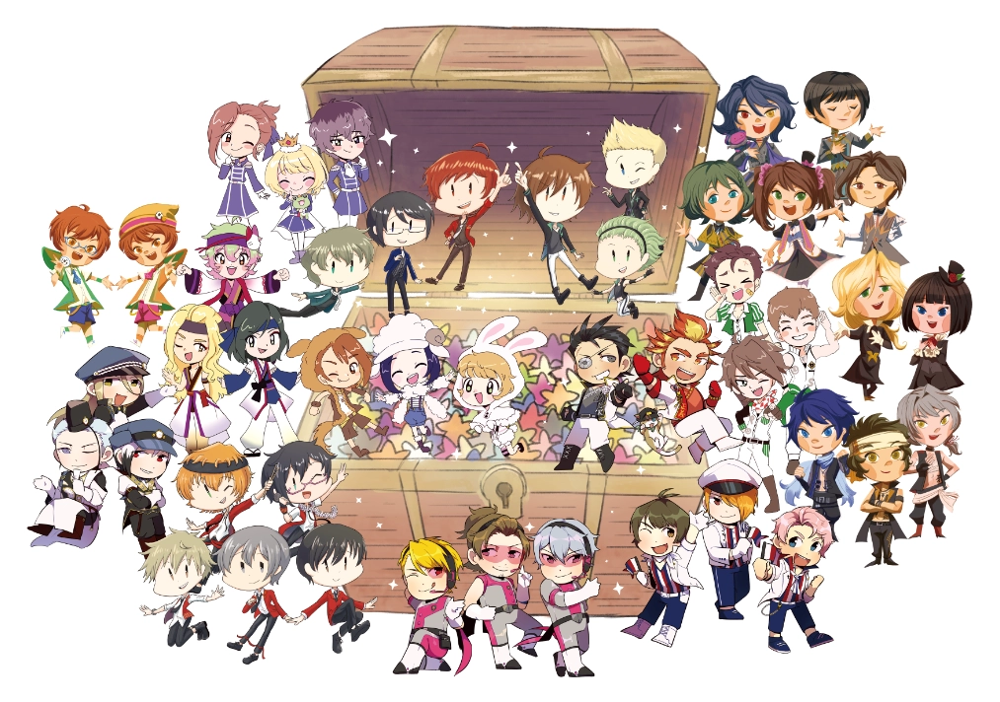

sideM translation archive (2023)

sortable/searchable archive of all sideM translations. long overdue update for the masterlist previously hosted on google documents (still a work in progress, set to be complete in mid august 2023). site.
the great ace attorney art collab (2023)
digital art collaboration featuring 54 artists drawing every character in tgaa, set to release in late july 2023. basically i just wanted an excuse to code an interesting website layout. site.
touchdown (2022)

fanbook for eyeshield 21's 20th anniversary. i handled graphics, formatting, art organization, and drew fill-in art. carrd.
sideM international flowerstand (2019)

flowerstand for the 2019 idolmaster sideM live. i drew shinsoku, s.e.m, f-lags, and legenders. knowing that my favorite voice actors saw it makes me the happiest P in the world!!!
song for re@son (2018)
 fanbook for the idolmaster sideM. for some reason, i drew a bunch... i was able to do page artwork for shinsoku and jupiter. i also wound up designing the cover and producing it with izzy.
fanbook for the idolmaster sideM. for some reason, i drew a bunch... i was able to do page artwork for shinsoku and jupiter. i also wound up designing the cover and producing it with izzy.
miscellaneous
occasionally there is participation in fanbooks as a comic artist/illustrator (feast, pinop, turnabout tarot, etc.). other projects i'm working on in the meanwhile:
- dgs dogboy anthology (planning)
- sideM 10th anniversary artbook (planning)
- horace knightley fangame (script done, someday i'll get around to making it)
- [...] barok van zieks comic anthology (i'll leave this for 2024)